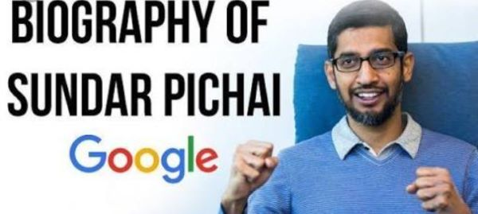

Pichai Sundarajan known as Sundar pichai, is an Indian-American business executive. He is the cheif executive officer(CEO) of Alphabet Inc and its subsidary Google.
Pichai was born in Madurai, Tamil Nadu, India.
- Personal Life:
- His mother, Lakshmi, was a stenographer, and his father, Regunatha Pichai, was an electrical engineer at GEC, the British conglomerate. His father also had a manufacturing plant that produced electrical components.Pichai grew up in a two-room apartment in Ashok Nagar, Chennai and had a Hindu upbringing.A boy growing up in Madras. At an early age Pichai displayed an interest in technology and an extraordinary memory, especially for telephone numbers. After earning a degree in metallurgy (B.Tech., 1993) and a silver medal at the Indian Institute of Technology Kharagpur, he was awarded a scholarship to study at Stanford University (M.S. in engineering and materials science, 1995). He remained in the United States thereafter, working briefly for Applied Materials (a supplier of semiconductor materials) and then earning an M.B.A. (2002) from the Wharton School of the University of Pennsylvania.
- He is married to Anjali Pichai, Haryani, a chemical engineer from Kota, Rajasthan. They met as classmates at the Indian Institute of Technology Kharagpur. The couple have two children. Pichai's interests include football and cricket.
- Carear:
- Pichai joined Google in 2004 as the head of product management and development. He initially worked on the Google Toolbar, which enabled those using the Microsoft Internet Explorer and Mozilla Firefox Web browsers to easily access the Google search engine. Over the next few years, he was directly involved in the development of Googles own browser, Chrome, which was released to the public in 2008. That same year Pichai was named vice president of product development, and he began to take a more-active public role. By 2012 he was a senior vice president, and two years later he was made product chief over both Google and the Android smartphone operating system.He went on to oversee the development of other applications such as Gmail and Google Maps.
- On March 13, 2013, Pichai added Android to the list of Google products that he oversaw. Android was formerly managed by Andy Rubin.He was a director of Jive Software from April 2011 to July 30, 2013.Pichai was selected to become the next CEO of Google on August 10, 2015after previously being appointed Product Chief by CEO, Larry Page. On October 24, 2015 he stepped into the new position at the completion of the formation of Alphabet Inc., the new holding company for the Google company family.In December 2019, Pichai became the CEO of Alphabet Inc.
Pichai said...................The coronavirus outbreak has sped up the adoption of digital tools and trends by years........Southeast Asia's Internet economy is currently on the verge of a massive transformation......more than 40 million people in the region connected to the Internet for the first time in 2020 - four times as many as the year before......while Covid has accelerated the use of digital tools, it's also exposed how many people are still left behind......some 1.7 billion people around the world are still unbanked, a huge portion of African households do not have access to broadband and millions of women entrepreneurs lack the same access to opportunity as their male counterparts.
Pichai said at the conclusion of his speech,
Our goal for the post-Covid world is to ensure the benefits of technology can be shared, as widely and equitably as possible. If we can do that, 2020 will be remembered not as the end of the world, but the beginning of a world that works better for everyone.